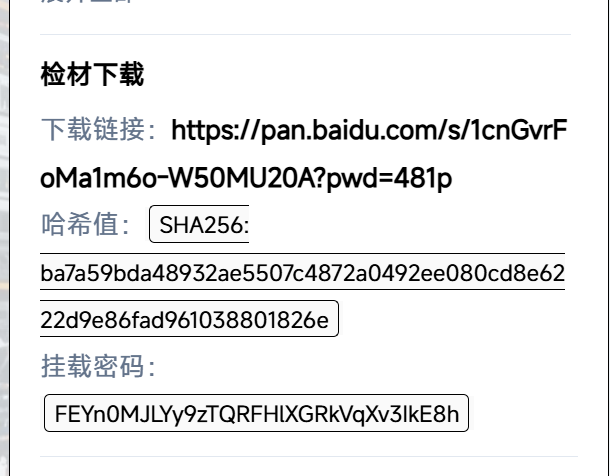
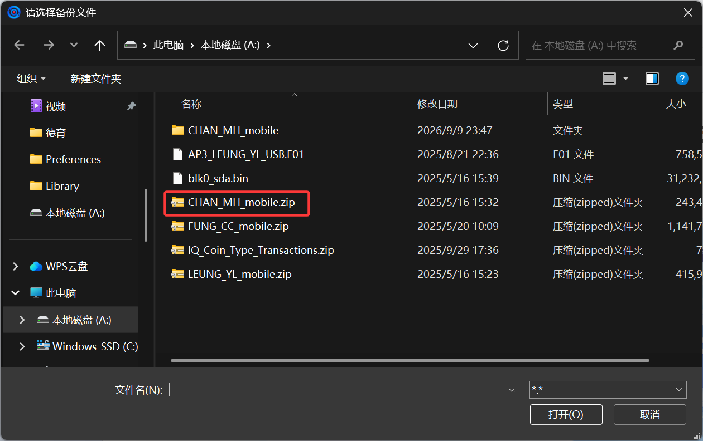
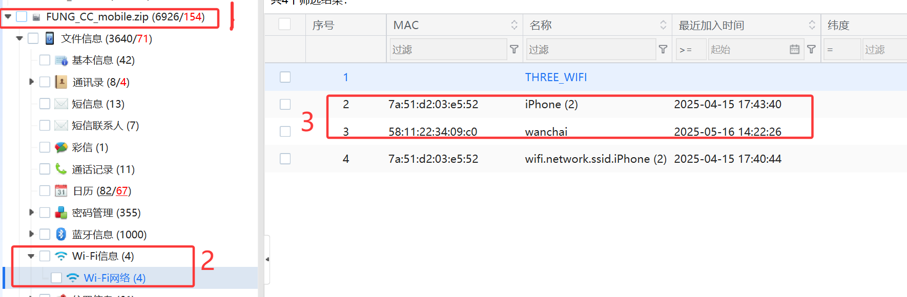
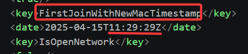
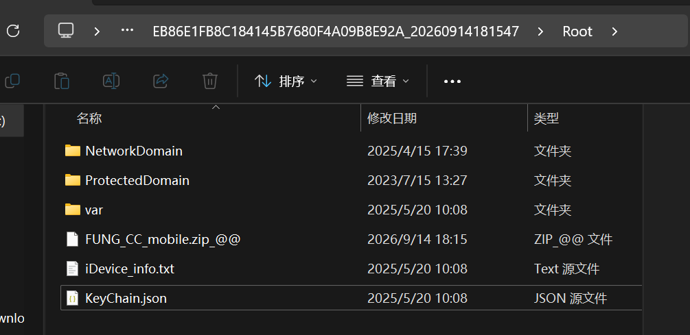
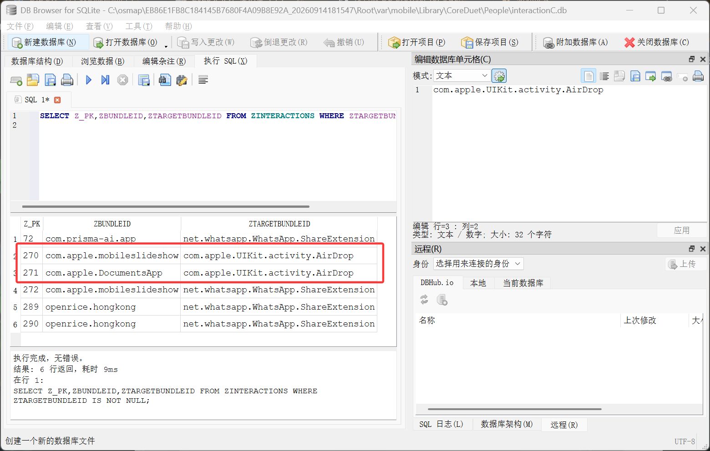
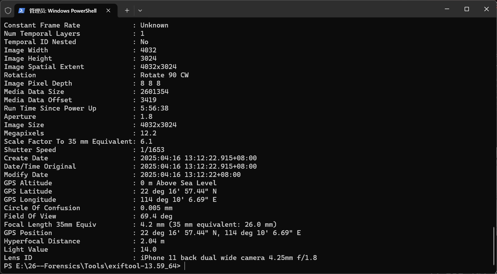
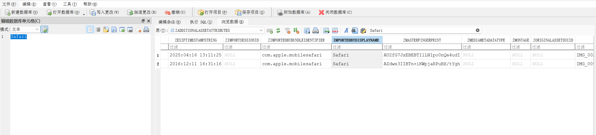
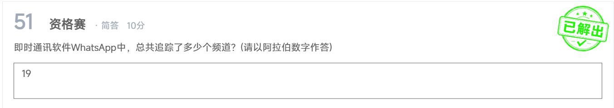
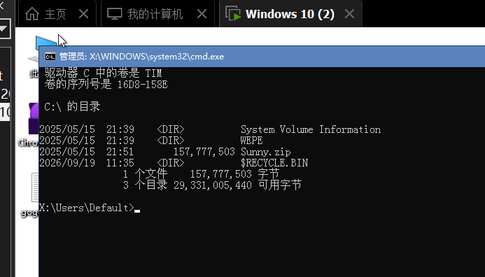

25美亚杯资格赛 学习and复现
案件复述
陈民浩与冯子超貌似起了争执，导致冯子超头部受伤昏迷
而陈民浩则因涉嫌“伤人”罪被警方当场拘捕，被捕后一直保持缄默，拒绝交代案情细节。
进一步调查显示，两人冲突疑因女子梁燕玲而起。
根据现场迹象推断，梁燕玲曾于事发时在场出现
也许她跟这件事情有着不可告人的秘密:）
作为初学者的步骤
- 下载文件

- 使用Vera crypt进行虚拟化在盘
- 打开美亚取证大师，因为是手机镜像所以

- 开始干活
- 又有一个关键点,这个是香港按东八区,所以加八小时
题目复现
- 请参考参赛材料FUNG_CC_mobile.zip回答以下问题这部智能手机连接过多少个 Wi-Fi 网络？(请以阿拉伯数字作答)
简单
直接在取证大师里面打开FUNG_CC_mobile.zip
⚠️：这里指的是wifi，第三个是热点 - 这部智能手机曾经连接过以下哪个无线网络？i) THREE_WIFIii) wanchaiiii)iPhone(2)iv) Router
简单
由上图可知 - 这部手提手机最早连接(
非热点)Wi-Fi的时间是什么？(请以GMT +8时区及以下格式作答: yyyy-MM-dd HH:mm:ss)PS:这些是这道题目会遇到的问题
都是苹果WIFI的特定文件名
可以适当看看
| 文件名 | 主要作用 |
|---|---|
com.apple.wifi.known-networks.plist |
已知/曾保存过的 Wi‑Fi 网络，通常最适合查 SSID、BSSID、网络安全类型等 |
com.apple.wifi-private-mac-networks.plist |
Wi‑Fi 私有 MAC 地址记录，保存网络与随机 MAC 的对应关系 |
com.apple.wifi.plist |
系统 Wi‑Fi 配置、接口和相关网络参数 |
com.apple.wifi-networks.plist |
部分取证软件使用的归并或显示名称，实际文件名可能不同 |
com.apple.wifi-networks.plist.backup |
上述 Wi‑Fi 数据的备份副本 |
com.apple.wifianalyticsd.plist |
Wi‑Fi 诊断、分析和故障记录，通常不是首选证据 |
com.apple.control-center.WiFiModule.plist |
控制中心 Wi‑Fi 开关及界面状态，不是完整连接历史 |
可以知道
com.apple.wifi-private-mac-networks.plist是我们所需要的
而刚好在取证大师里面的数据是错的❌ 不知道为什么
IPHONE 命名明显是热点
- 承上题，请列出这个连接的服务集识别码(SSID)?(请依照参赛材料中的原文作答，注意区分大小写、空格及符号)
这个提醒很明显了
承上题,所以就是wanchai - 承上题，请列出这个连接的登入金钥?
在做之前先了解一下
登入金钥是个什么东东
原来就是简简单单的WIFI-KEY呀,呵呵
实不相瞒这题我用AI做的
- 相册中有两张图像互换格式图片(gif)「IMG_0057.GIF」及「IMG_0062.GIF」，请指出由哪一个软件拍摄?
- 曾经以空投(AirDrop)方式成功传送了文件到另外一个装置，以下哪一个陈述是正确的？
在iPhone上，其实有一个存储用户人际互动数据的关键数据库文件var\mobile\Library\CoreDuet\People

后缀是AirDrop 就是了
这里下了一个新的软件DB.Browser.for.SQLite
PS:如何用这个软件查找数据 - 点击上方的 “浏览数据(B)”。
- 在 Table（表）下拉框中选择要查询的表。
- 使用表格上方或下方的 Filter/过滤输入框，输入关键词。
- 点击应用或按回车，结果会筛选出包含该内容的记录。
这里用到了AI解析
这张照片曾经通过 AirDrop 传送过。数据库中通常不会保存文字 “AirDrop”，而是保存照片的分享时间，所以要用相关字段反查
具体原因：
ZASSET是照片和视频的主表，包含照片的基本信息。ZLASTSHAREDDATE表示该照片最近一次被分享的时间。- NULL 表示没有记录分享时间；不为空的记录就是候选照片。
ZFILENAME保存照片的原始文件名和扩展名。- 题目说只有一张符合条件，因此筛选出唯一的非空记录后，读取同一行的 ZFILENAME 即可。
- 时间解析
这个是苹果时间
解析方式不同于UNIX时间戳 - exif位置的解析
下载一个软件
ExifTool
发现很强大,几乎图片所有的信息他都有 666!
- 曾经通过网络浏览器「Safari」下载了多少个图片文件？
这题可以很好的学习一下
DB Browser for SQLite的用法
表名 ZADDITIONALASSETATTRIBUTES
具体的解法我放在了iOS-字段名英文拆词法中 - 查找
「 IMG_0004.MOV」曾被修改后再储存成另一个文件，该文件名称是?这题可以继续巩固刚刚学到的知识
Z_PK 是两张表之间的钥匙
这道题需要的信息分居两张表：
| 你要的信息 | 在哪张表 |
|---|---|
| 原始文件名（IMG_0004.mov） | ZADDITIONALASSETATTRIBUTES（属性表） |
| 当前文件名（IMG_0085.mov） | ZASSET（主表） |
| PS : Z_PK = Primary Key（主键） |
- 先在
ZADDITIONALASSETATTRIBUTES里面搜索 IMG_0004.MOV 找到他的PK值- 然后在
ZASSET使用SQL语句搜索- SELECT ZFILENAME, ZKIND, ZDURATION FROM ZASSET;
- 曾经通过人工智能聊天APP “POE”查询一个问题，请列出这个问题的完整句子？
这个思路很不错
- 先全局搜索POE

这里二货了 ， 只需要有频道列表就是关注了
- 哈希值求解工具的运用
D:\MYOS\ToolSet\HashCal\ 路径在这里！
然后就简单了！！！ 这几题都用到了对DB库的运用
- 第一题直接搜索
85254961408@s.whatsapp.net发现是陳民浩 - 然后从三个检材中都看不出来什么
- 试着直接搜索陳民浩 发现在
梁燕玲的检材中发现他被移除Sportsmen
- 第二题需要在取证大师里面直接搜索
投票 - 第三题需要在DB库里面先筛选群聊的ID
- 然后再根据上下文得出投票的type
- 最后由isfromme得出投了几次
1
2
3SELECT * FROM ZWAMESSAGE
WHERE ZISFROMME = 1 AND
ZMESSAGETYPE = 46;
- 承上题，该群组的建立时间是什么？
有时候要用巧劲
这里可以直接看群聊记录 （捂脸🤦♂️） - 查找苹果手机照片经纬度
这一题用exiftool找不到
退而求其次，使用photos.SPILTE 也可以找到 - 查找PDF文件的内容
点开之后没看到东西
原来他们两是隐写术高手
直接复制粘贴即解
这一块是个新的知识点
77. 存储介质取证 / 磁盘取证 初学
想查看有几个分区 easy！
用美亚里面现有的D:\MYOS\ToolSet\DiskMountTool\DiskMount.exe
打开后直接挂载 只读
win+X 查看磁盘管理
有几个色块就是有几个分区
84. 查看挂载U盘里的文件的加密算法
第一步：参考https://mei-you-qian.github.io/2025/11/21/2025%E7%BE%8E%E4%BA%9A%E6%9D%AF-%E8%B5%84%E6%A0%BC%E8%B5%9B/里面的挂载方式
第二步：发现虚拟机里面的桌面有一串密码，试了一下发现是压缩包的密码
第三步：打开后发现有一个容器，伴随着VeraCrypt的英文
第四步：用VeraCrypt打开，发现要密码，于是尝试密钥文件
但是找不到！
86. 这一题问WinPE 启动后，系统会自动将核心映像挂载到哪个驱动器？
在虚拟机里面输入CMD，发现是系统是运行在X: